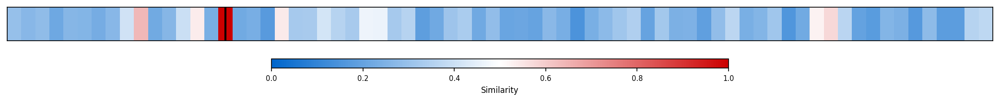
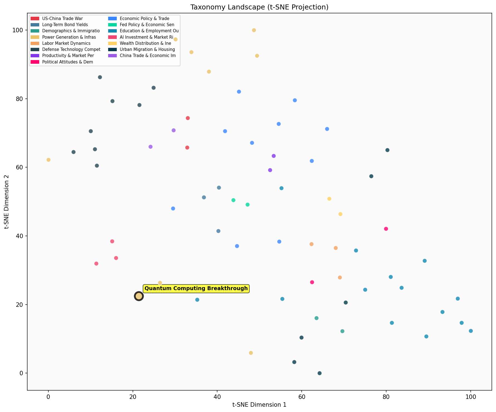

Description
This subcluster focuses on quantum computing technological breakthroughs and their commercial viability, tracking major industry players like Google, IBM, Microsoft, and international research teams as they achieve performance milestones and manufacturing advances. Articles document specific chip developments, algorithmic achievements, and quantum communication distance records, emphasizing timeline predictions for practical applications within five years. Unlike sibling subclusters covering traditional energy infrastructure or natural phenomena, this subcluster centers on emerging computational technology that could revolutionize processing power, featuring corporate announcements, research publications, and technical specifications from leading tech companies racing toward quantum supremacy.
Similarity to All 70 Subclusters
Each cell represents a subcluster. Color intensity shows similarity (blue=low, red=high). Black line marks current subcluster position.
Relationship to Primary Clusters
Average similarity to each of the 15 primary clusters. Larger area = stronger relationship to that cluster.
Taxonomy Landscape
All 70 subclusters positioned by similarity (t-SNE). Current subcluster highlighted with label. Click to enlarge.
Network Connections
Current subcluster at center, connected to related subclusters. Line thickness = similarity strength.
Most Representative Articles
-
1. Google claims it successfully ran an algorithm on “Willow,” its quantum computing chip. The breakthr
-
2. Physicists have created objects that retain a memory of their past, a step towards "error-tolerant q
-
3. Engineering teams at IBM and Google both believe they are on track to build industrial-scale quantum
-
4. Microsoft introduced Majorana 1, the world’s first quantum chip powered by a new Topological Core ar
-
5. IBM Quantum Starling aims to achieve 20,000x the compute of current quantum computers by 2029, lever
Edge Cases (Boundary Articles)
-
1. Microsoft researchers document a technical breakthrough that could accelerate the development of scaThis article is borderline because while it mentions Microsoft and quantum computing development (fitting the commercial aspect), it primarily emphasizes a "technical breakthrough" documented by researchers and published in Nature, which aligns more with scientific research and discovery rather than commercial development or industry competition. The focus on the research breakthrough itself, rather than Microsoft's commercial quantum computing strategy or market positioning, makes it more suitable for the Scientific Research & Discovery cluster.
-
2. Chinese computer scientists claimed to have used quantum computing to break the RSA algorithm that uThis article is borderline because while it mentions quantum computing, it focuses primarily on cybersecurity implications and cryptographic vulnerabilities rather than technological breakthroughs or commercial development progress. The emphasis on breaking encryption algorithms aligns more with security/policy concerns than with the cluster's focus on industry players' technological advances and commercial viability.
-
3. A Chinese team set a distance record in quantum communication by sending an encryption key nearly 13This article is borderline because while it involves quantum technology and mentions a research team (fitting the quantum computing theme), it specifically focuses on quantum communication and encryption rather than quantum computing hardware, algorithms, or commercial computing applications that typically define quantum computing breakthroughs. The research is more aligned with secure communications technology than the computational advances and commercial development that characterize the main cluster focus.
Original Dendrogram